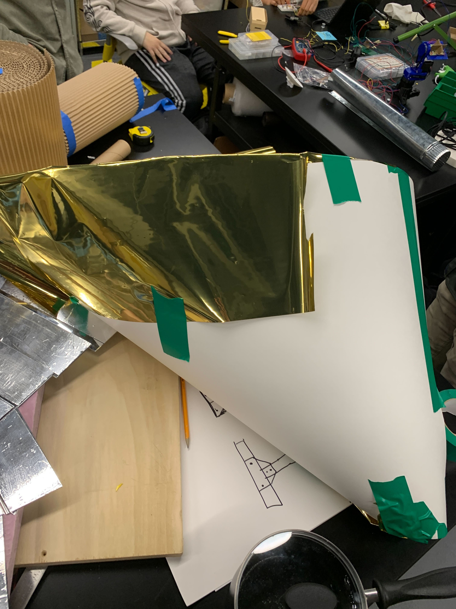
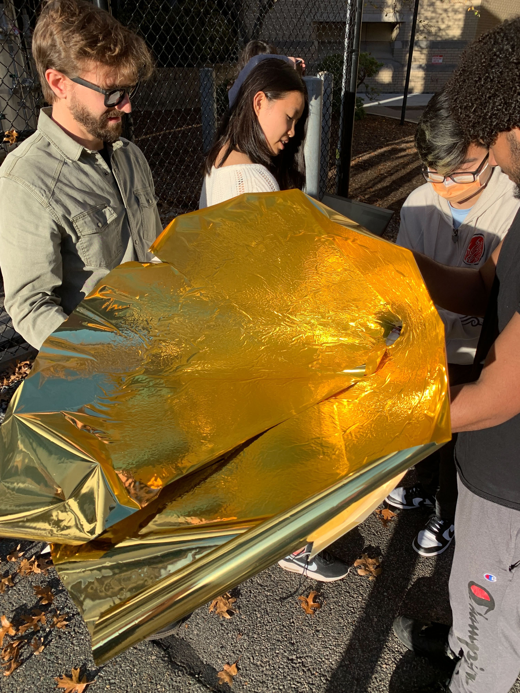
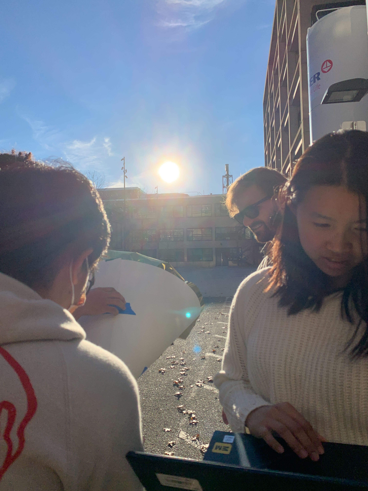
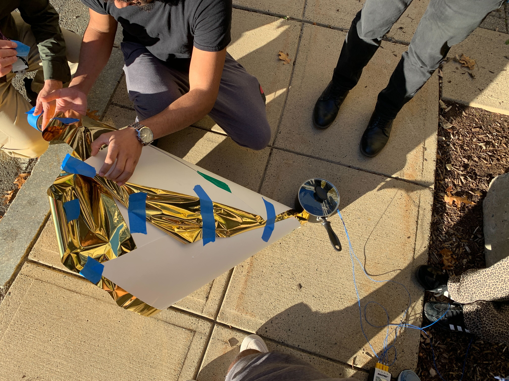
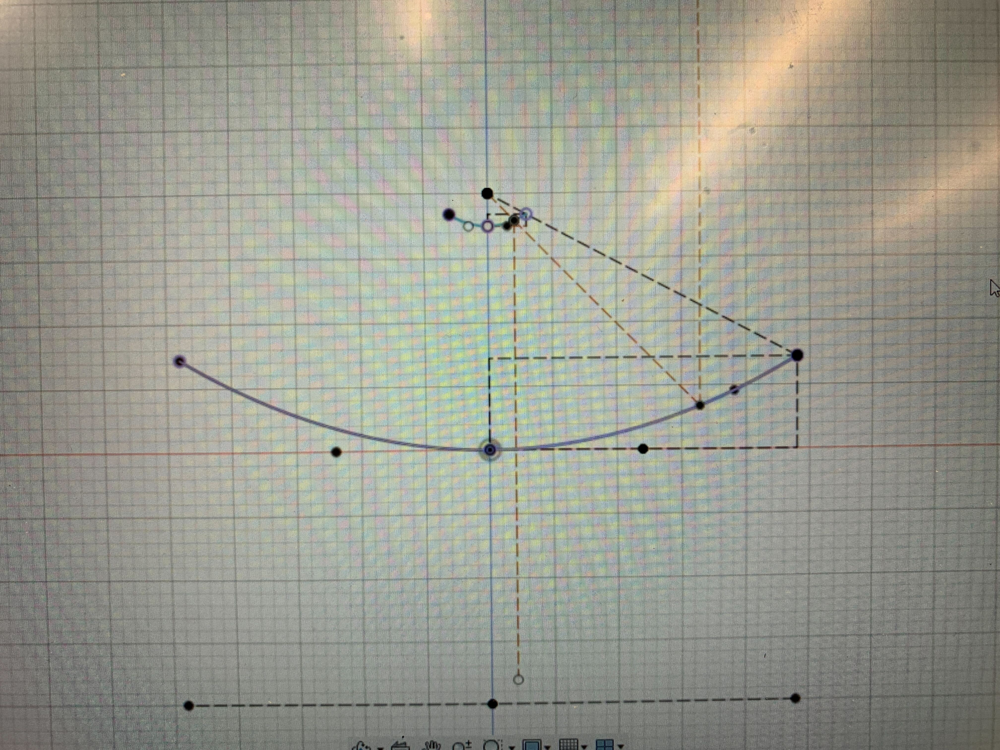
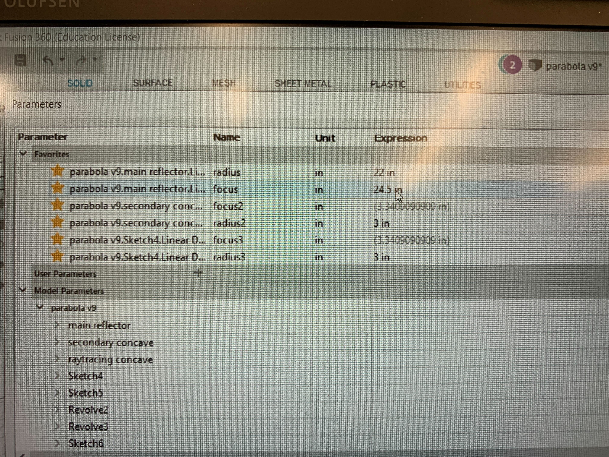
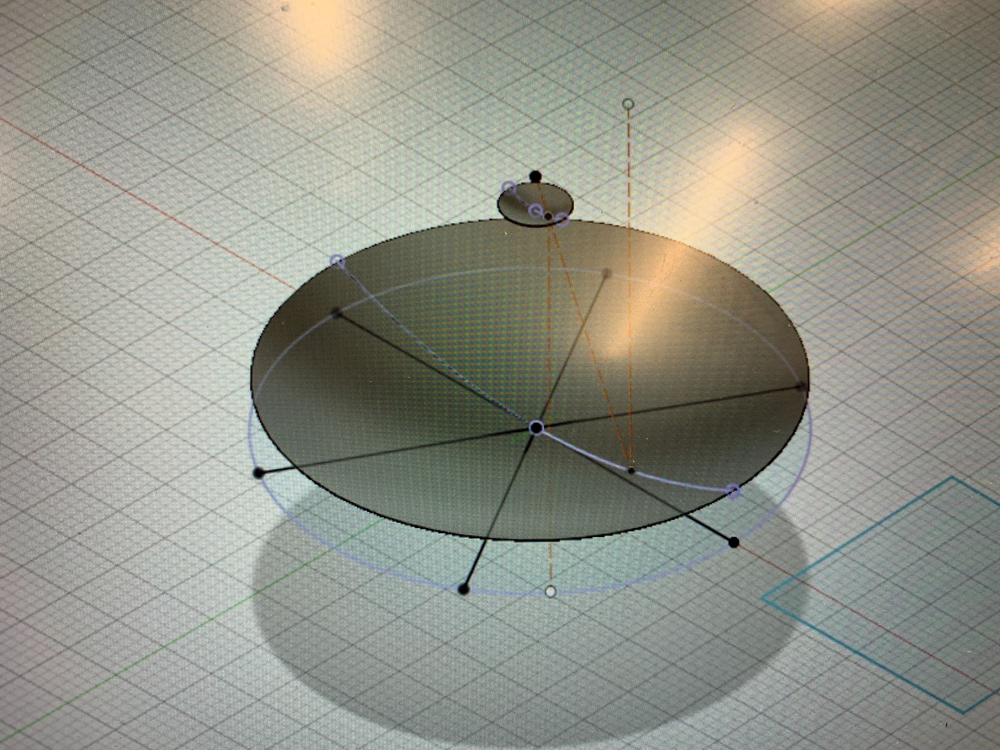
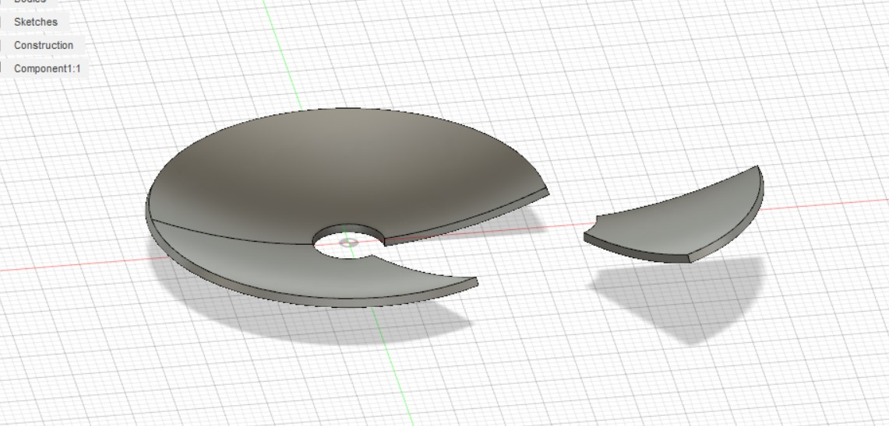

### Week 10-11: Cone Concentrator, New Dish Design
Week 10 was focused primarily on the testing of different ways to implement the cylindrical light pipe that will be included in our final design. The idea is that light will be reflected off of the bounce mirror ad down through the pipe, which then further directs the light towards the salt brick.
This week, we discussed and tested ways to make this feature of the solar cooker more effective. The idea we came up with was to change the center pipe shape to be a cone rather than a cylinder, in order to better focus the light. To do this, we constructed a cone out of poster paper, which was then coated in a reflective paper.
This is what the overall cone structure looked like.

And here is an image of the inside of the cone.

We then brought the sun outside to test its effectiveness, and see if it actually was able to heat things up quicker than a standard cylindrical pipe would. To do this, we aimed the cones wide end towards the sun, with the narrow end pointing towards a pot of water with thermocouples inside to measure temperature changes.


The results of this experiment found that the cone concentrator did increase temperature at a quicker rate. However, the difference was fairly marginal, and the concentrator was not able to heat the water up to any important temperature. Thus, it may be beneficial to make the center pipe of the solar cooker slightly conical, but the experiment found that this should not be a point of focus for the project.
Week 11 began with our team focusing on the design of the main reflector dish, and trying to make final decisions on the design of the array based on known constraints that we had. This was an important process, because we realized that our design up until this point would not be able to properly work. If we reflected light off of the fresnel array towards a flat bounce mirror, then each of those beams would then most likely reflect off to the other side of the array, rather than straight down through our light collection pipe.
This led to us shifting the design of our dish from a fresnel reflector, to a parabaloid, to ensure that all the light is able to focus down our light pipe.
We started off by examining our 2D CAD for the parabaloid dish.

Then, after discussing how we would actually manufature the dish, we decided to use thermoforming, a process that involves stretching and vaccuum sealing plastic over a given shape; in our case, the parabaloid dish. In order to make this easier, we made some adjustments to the CAD, moving the focal point as far out as possible, and increasing the radius of the reflector dish as much as we could while still allowing it to fit in the thermoforming machine. These adjustments reduced the curvature of the dish, which makes the manufacturing process a lot easier.

After making these changes, I created a 3D model of our reflector dish.

I then cut the dish into 6 equal sections that would be able to fit inside the thermoformer.

Our next step is to add some supports to our model, so that once the physical dish section is created, there will be some overhang off the dish section during the thermoforming process that could be used to attach the sections together.
And here is a [link to the home page](../index.html).